Credit Score
Created by 马明
Content
- Credit Scoring Introduction
- Credit Scorecard Modeling Methodology
- Scorecard Development
Credit Scoring Introduction
What is Credit Scoring?
- Advances in technology have enabled financial lenders to reduce lending risk by making use of a variety of data about customers.
- Using statistical and machine learning techniques, available data is analysed and boiled down to a single value known as a credit score representing the lending risk.
- A form of Artificial Intelligence, based on predictive modelling, that assesses the likelihood of a customer defaulting on a credit obligation
Why Do Credit Scoring?
- “Buy now, pay later”
- Need to be aware of the risks
- Need to assess the risks
Credit Score Type
- Application Score:
Assesses the risk of default of new applicants when making decision whether to accept or reject the applicant
- Behavioural Score:
Assess the risk of default associated with an existing customer when making decisions relating to account management such as credit limit, over-limit management, new products, and the like.
- Collections Score:
Used in collections strategies for assessing the likelihood of customers in collections paying back the debt
Credit Risk Scorecard
- The Credit Scorecard model. Usually referred as Standard Scorecard
- Based on logistic regression
- Comply with the Basel II regulatory framework
- Being very intuitive and easy to interpret and justify
Credit Scorecard Modelling Methodology
"Great design is great complexity presented via simplicity."
-- (M. Cobanli)
Design and develop an accurate, useful and stable credit risk model
- Not miss answers to important questions
- Model will successfully pass a peer-review or audit process
- Others will be able to replicate the model results
We need identified these important elements
- systematic steps – methodology – that I will follow to ensure best practice
- a supporting structure – theoretical framework – that I will start filling in with my answers
- a description of a credit risk model setting out important characteristics – model design – that proves business benefits such as generating higher profits
Questions
How do I tell "bad" from "good" customers? Do they pay 60, 90 or 180 days-past due?
When the model predicts "bad"/"good" customers, how long should be the outcome period? Should I fix the date or the length of that period
Who should be included in the analysis? Do I need to exclude fraudulent customers or those who are somewhere between "good" and "bad" status?
What are the main characteristics that tell "bad" from "good" customers?
Development Methodologies
- Business
- Data Science
- Software development
- Agile-scrum
- CRISP-DM (Cross Industry Standard Process for Data Mining)
Theoretical Framework and Model Design
Key elements
- dependent variable
- independent variables
- testable hypotheses
Model design
- the unit of analysis (such as, customer or product level)
- population frame (for example, through-the-door loan applicants) and sample size
- operational definitions (such as, definition of "bad") and modelling assumptions (for example, excluding fraudulent customers)
- time horizon of observation (such as, customers’ payment history over the last two years) and performance windows, that is the time frame for which the "bad" definition applies
- data sources and data collection methods
Credit Scorecard Model Development Steps
- Data preparation
- Modelling
- Evaluation
- Deployment
Data Preparation
"Garbage in, garbage out"
time consuming phase of the CRISP-DM cycle
Key Steps
- Data Integration
- Exploratory data analysis
- Data cleansing
- Data transformation
Data Preparation Process
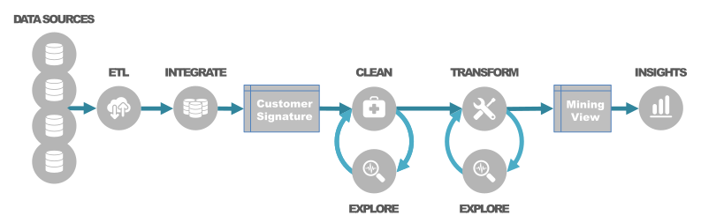- Missing Data
- Outlier Detection
- Data Transform
Simple Scorecard process
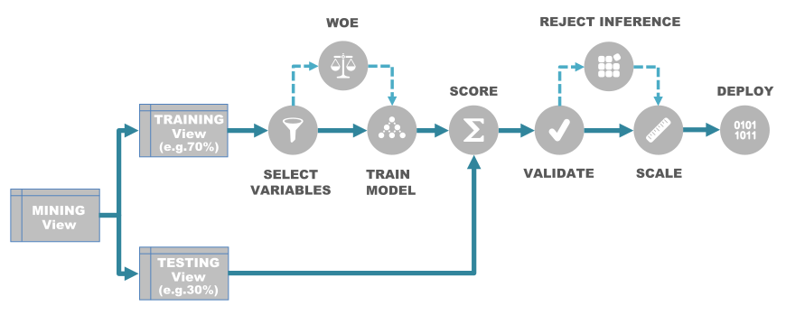Variables Selections
- Supervised Variable Selection(outside predictive model): Information Value, Chi-Square Statistics, Gini Index
- Unsupervised variable selection: Correlation analysis, Cluster analysis,Principal component analysis
- Supervised Variable Selection(Inside predictive model): Recursive feature selection (forward, backward and stepwise), Regularisation, AIC/BIC
Iterative Nature of Variable Selection Process
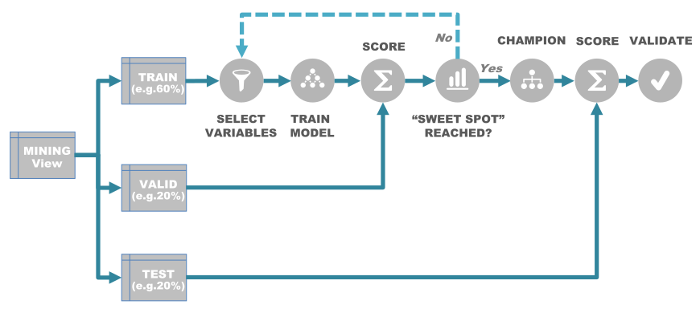Scorecard Development
Standard Scorecard Development Process
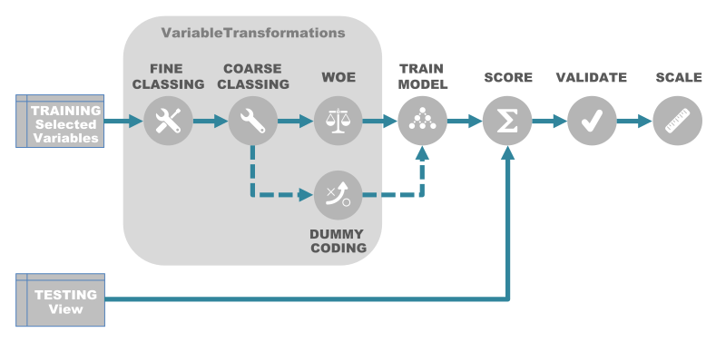Variable Transformations
- Fine Classing
Applied to all continuous variables and those discrete variables with high cardinality, typically between 20 and 50 fine granular bins
- Coarse classing
Achieve simplicity by creating fewer bins, usually up to ten
- Dummy coding
Creating binary (dummy) variables for all coarse classes except the reference class
- Weight of evidence (WOE) transformation
Substitutes each coarse class with a risk value, and in turn collapses the risk values into a single numeric variable.
The numeric variable describes the relationship between an independent variable and a dependent variable
Model Training and Scaling
- Logistic regression is a commonly used technique in credit scoring for solving binary classification problems
- Preferred candidate variables are those with higher information value (usually between 0.1 and 0.5) have a linear relationship with the dependent variable, have good coverage across all categories, have a normal distribution, contain a notable overall contribution, and are relevant to the business
- The next step is to adjust the model to a scale desired by the business.
- Scaling acts as a measuring instrument that provides consistency and standardisation of scores across different scorecards
Model Performance
- Evaluation for accuracy
- Validation for robustness
- ROI Analysis
Segmentation and Reject Inference
Segmentation
- The process of identifying and justifying the number of scorecards – known as segmentation
- The initial segmentation pre-assessment is carried out during the business insights analysis
- The business drivers for segmentation: marketing,demographics,data availability
- The statistical drivers assume each segment contains interaction effects where predictive patterns vary across the segments
- Identified segmentation schema using supervised or unsupervised segmentation
- Segmentation is an iterative process and separate scorecards are usually built independently
Reject Inference
- Application scorecards have selection bias
- The unknown performance of the rejects needs to be inferred, which is completed using the Reject inference (RI) method
- 2 thoughts on it
Process with reject inference
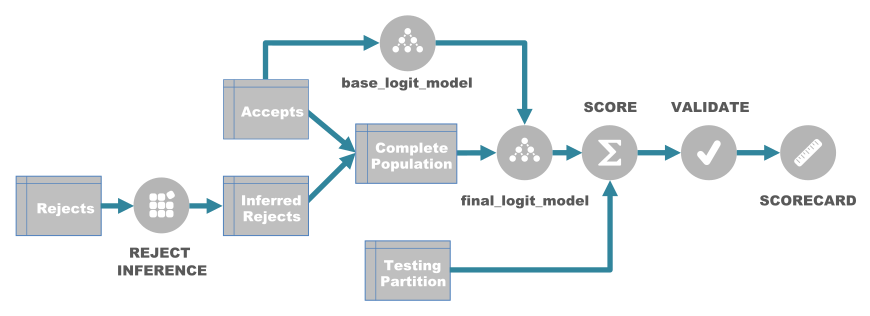Reject Inference Techniques
- Assignment:
proportional assignment
simple
- Augmentation:
fuzzy augmentation
parcelling
Proportional assignment
Random partitioning of the rejects into "good" and "bad" accounts with a "bad" rate two to five times greater than in the accepted population
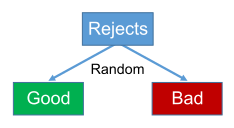Simple augmentation
Assumes scoring the rejects using the base_logit_model and partitioning it into "good" and "bad" accounts based on a cut-off value
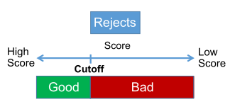Fuzzy augmentation
Assumes scoring of the rejects using the base_logit_model. Each record is effectively duplicated containing weighted "bad" and weighted "good" components, both derived from the rejects’ scores
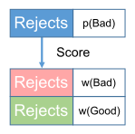Parcelling
Hybrid method encompassing simple augmentation and proportional assignment.Parcels are created by binning the rejects’ scores, generated using the base_logit_model, into the score bands. Proportional assignment is applied on each parcel with a "bad" rate two to five times greater than the "bad" rate in the equivalent score band of the accepted population
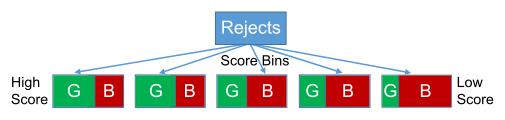Credit Risk Strategies
Credit risk strategy is the process that follows after the scorecard development and before its implementation
It tells us how to interpret the customer score and what would be an adequate actionable treatment corresponding to that score
The winning strategy :
- increases the customer base
- reduces the credit risk
- maximises the profit
Different Cut-off Strategies
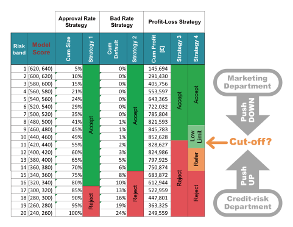Identify the clear business objective and understand the business processes that consequently shape the analysis
The most common and the simplest form of credit risk strategy is based on a one-dimensional cut-off for an accept or reject decision
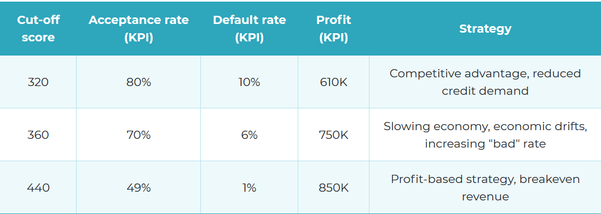
More sophisticated credit risk strategies have multiple cut-off levels or combine two or more credit scores, for example internal application score and bureau scores
Often, strategies include other predictive models such as customer retention or response rate or customer lifetime value
These behavioural scores, combined with policy and regulatory rules, and business KPIs can make best advantage of predictive analytics and business rules
Multiple Cut-off Levels for Multiple Treatments
Scores may be further used for risk-based pricing to adjust product offers such as interest rates, credit limits, repayment terms, and so on
Risk-based pricing takes many forms from one-dimensional multiple cut-off treatments based on profit/loss analysis (for example, accept with lower limit), to a matrix approach combining two dimensions, for example behavioural score and outstanding balance to identify credit limits or interest rates
The matrix approach can also be adopted for a simple optimisation in order to control operational cost. For example, combining two predictive models – scores and response rate – may enable marketing departments to focus on customers with low risk and high probability to respond to an offer
There is danger in using over-simplistic strategies
A thorough insight analysis may help identify valuable segments and adjust the strategy accordingly
A customer lifetime value (CLV) model helps to identify valuable segments; lenders
Scorecard Implementation:
Deployment, Production and Monitoring
"Knowledge is not power. The implementation of knowledge is power."
Scorecard Implementation Stages
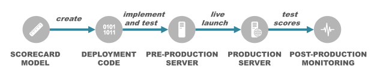- The final stage of the CRISP-DM framework – implementation
- Transition from the data science domain to the information technology domain
- The roles of responsibilities also change from data scientists and business analysts to system and database administrators and testers.
Real Time Scoring using API Call
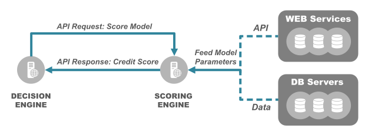Monitoring
"If you cannot measure it, you cannot improve it. -- Lord Kelvin"
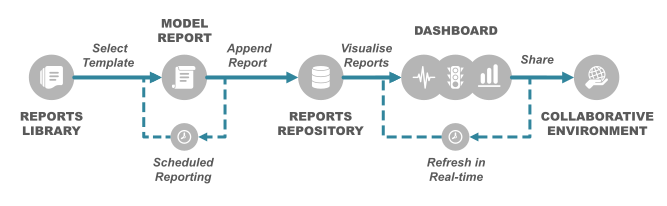Model Report
- Drift Reports
- Population Stability
- Approval Rate Analysis
- Characteristic analysis
- Performance Reports
- Performance Tracking
- Vintage Analysis
- Porfolio Analysis
- Delinquency distribution
- Transition matrix
Big Picture
“It’s always the small pieces that make the big picture.”
We start building a bigger picture of the enterprise decision management (EDM) system

EDM
Three fundamental components
- Data
- Logic
- Interface
EDM system provides the framework for translating data into actionable decisions using data-, model-, knowledge-, communication-, and document-driven decision making processes
A decision management system is only valuable if it can fulfil the following
- Automation
- Data and Systems Security
- Concurrency of processes
- Scalability
- Transparency
- Heterogeneity

Example of a Simplified Decision Requirements for Loan Application Process using BPMN
Markdown support
Write content using inline or external Markdown. Instructions and more info available in the readme.
<section data-markdown>
## Markdown support
Write content using inline or external Markdown.
Instructions and more info available in the [readme](https://github.com/hakimel/reveal.js#markdown).
</section>
Fragments
Hit the next arrow...
... to step through ...
... a fragmented slide.
Fragment Styles
There's different types of fragments, like:
grow
shrink
fade-out
fade-up (also down, left and right!)
current-visible
Highlight red blue green
Transition Styles
You can select from different transitions, like:
None -
Fade -
Slide -
Convex -
Concave -
Zoom
Themes
reveal.js comes with a few themes built in:
Black (default) -
White -
League -
Sky -
Beige -
Simple
Serif -
Blood -
Night -
Moon -
Solarized
Slide Backgrounds
Set data-background="#dddddd" on a slide to change the background color. All CSS color formats are supported.
Image Backgrounds
<section data-background="image.png">Tiled Backgrounds
<section data-background="image.png" data-background-repeat="repeat" data-background-size="100px">Video Backgrounds
<section data-background-video="video.mp4,video.webm">... and GIFs!
Background Transitions
Different background transitions are available via the backgroundTransition option. This one's called "zoom".
Reveal.configure({ backgroundTransition: 'zoom' })Background Transitions
You can override background transitions per-slide.
<section data-background-transition="zoom">Pretty Code
function linkify( selector ) {
if( supports3DTransforms ) {
var nodes = document.querySelectorAll( selector );
for( var i = 0, len = nodes.length; i < len; i++ ) {
var node = nodes[i];
if( !node.className ) {
node.className += ' roll';
}
}
}
}Code syntax highlighting courtesy of highlight.js.
Marvelous List
- No order here
- Or here
- Or here
- Or here
Fantastic Ordered List
- One is smaller than...
- Two is smaller than...
- Three!
Tabular Tables
| Item | Value | Quantity |
|---|---|---|
| Apples | $1 | 7 |
| Lemonade | $2 | 18 |
| Bread | $3 | 2 |
Clever Quotes
These guys come in two forms, inline: The nice thing about standards is that there are so many to choose from
and block:
“For years there has been a theory that millions of monkeys typing at random on millions of typewriters would reproduce the entire works of Shakespeare. The Internet has proven this theory to be untrue.”
Intergalactic Interconnections
You can link between slides internally, like this.
Speaker View
There's a speaker view. It includes a timer, preview of the upcoming slide as well as your speaker notes.
Press the S key to try it out.
Export to PDF
Presentations can be exported to PDF, here's an example:
Global State
Set data-state="something" on a slide and "something"
will be added as a class to the document element when the slide is open. This lets you
apply broader style changes, like switching the page background.
State Events
Additionally custom events can be triggered on a per slide basis by binding to the data-state name.
Reveal.addEventListener( 'customevent', function() {
console.log( '"customevent" has fired' );
} );Take a Moment
Press B or . on your keyboard to pause the presentation. This is helpful when you're on stage and want to take distracting slides off the screen.
Much more
- Right-to-left support
- Extensive JavaScript API
- Auto-progression
- Parallax backgrounds
- Custom keyboard bindings
THE END